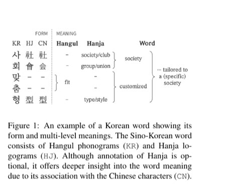

Don't Just Scratch the Surface: Enhancing Word Representations for Korean with Hanja
EMNLP-IJCNLP 2019
Taeuk Kim, Kang Min Yoo, Sang-goo Lee
One-Line Summary
Enriching Korean word representations by leveraging Hanja (Chinese character) information

Figure 1. Enriching Korean word representations with Hanja (Chinese character) information, leveraging the etymological connection between Korean and Chinese characters.
Key Points
Enhances the semantic richness of word representations by leveraging Hanja information embedded in Korean vocabulary
Improves performance on various Korean NLP tasks by integrating morphological and semantic information from Hanja into embeddings